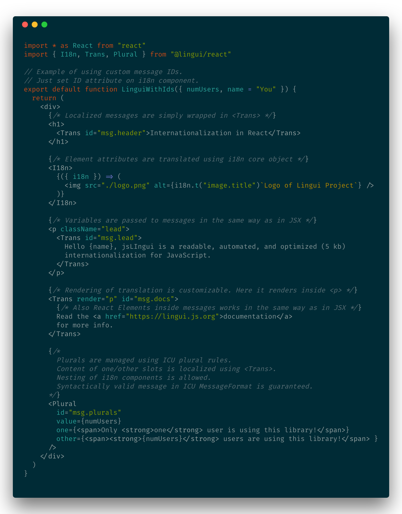

LinguiJS - Seamless internationalization in Javascript¶
🌍📖 A readable, automated, and optimized (5 kb) internationalization for JavaScript
Internationalization is the design and development of a product, application or document content that enables easy localization for target audiences that vary in culture, region, or language.


Key features¶
Lingui is an easy yet powerfull internationalization framework for global projects.
- Clean and readable
- Keep your code clean and readable, while the library uses battle-tested and powerful ICU MessageFormat under the hood.
- Universal
- Use it everywhere. @lingui/core provides the essential intl functionality which works in any JavaScript project while @lingui/react offers components to leverage React rendering.
- Full rich-text support
- Use React components inside localized messages without any limitation. Writing rich-text messages is as easy as writing JSX.
- Powerful tooling
- Manage the whole intl workflow using Lingui CLI. It extracts messages from source code, validates messages coming from translators and checks that all messages are translated before shipping to production.
- Unopinionated
- Integrate Lingui into your existing workflow. It supports message keys as well as auto generated messages. Translations are stored either in JSON or standard PO file, which is supported in almost all translation tools.
- Lightweight and optimized
- Core library is only 1.9 kB gzipped, React components are additional 3.1 kBs gzipped. That’s less than Redux for a full-featured intl library.
- Active community
- Join us on Gitter to discuss the latest development. At the moment, Lingui is the most active intl project on GitHub.
- Compatible with react-intl
- Low-level React API is very similar to react-intl and the message format is the same. It’s easy to migrate existing project.

Example with React

Example with React using message IDs
Tutorials
Guides
API References